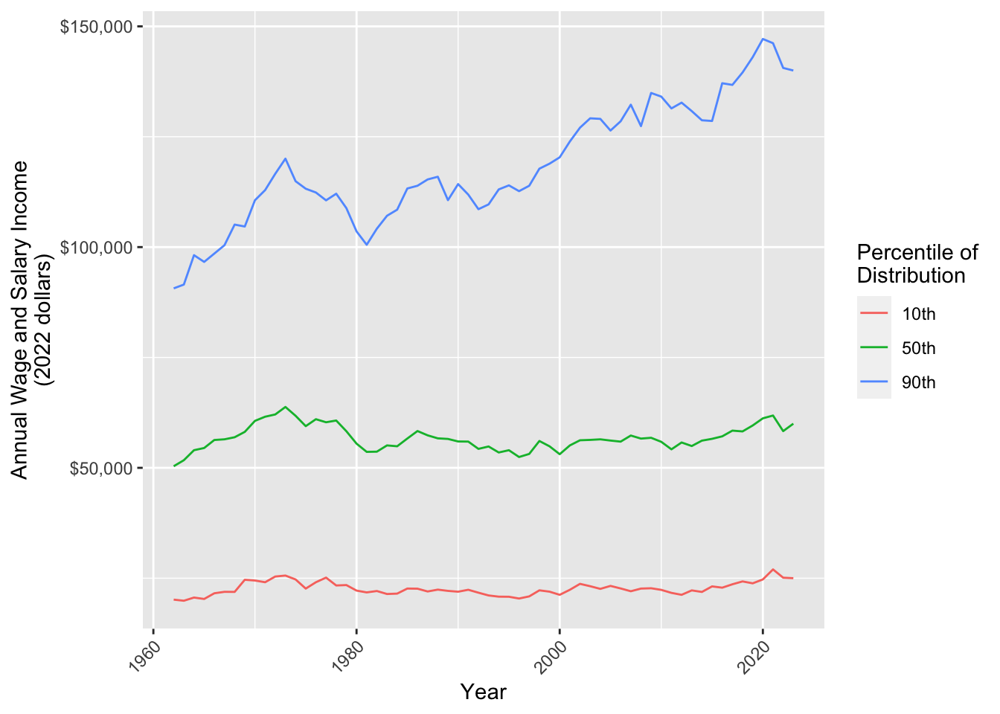

Data transformation
This exercise examines how income inequality has changed over time in the U.S. We will measure inequality by the 10th, 50th, and 90th percentiles of wage and salary income from 1962 to 2022. We expect that this exercise may take more time than one discussion session.1 You will begin by downloading data and end by making this graph.
Data access
This exercise uses data from the Current Population Survey.
- Register for an account at cps.ipums.org
- Log in
- Click “Get Data”
- Add the following variables to your cart:
incwage,educ,wkswork2,age,asecwt - Add the 1962–2023 ASEC samples to your cart. Exclude the basic monthly samples
- Create a data extract
- Select cases to only download people ages 30–45
- Choose to download in Stata (.dta) format
- Submit your extract and download the data!
Store your data in a working directory: a folder on your computer that will hold the data for this exercise.
Tip
Keep a browser tab open with the IPUMS webpage to easily access full documentation
Prepare R environment
In RStudio, create a Quarto document. Save it in your working directory.
Use the code below to load packages:
library(tidyverse)
library(haven)The haven package allows us to load data in the .dta format designed for Stata. Use read_dta()) and store the data in an object called micro. By default, these data are stored in a tibble.
micro <- read_dta("cps_00077.dta")
Tip
- Change the file name to the name of the file you downloaded
- If R says the file does not exist in your current working directory, you may need to set your working directory by clicking Session -> Set Working Directory -> To Source File Location on a Mac or Tools -> Change Working Directory on Windows.
Get familiar with our dataset
Type micro in the console. What do you see?
- How many rows are there?
- How many columns?
Some columns such as educ have a numeric code and a label. The code is how IPUMS has stored the data. The label is what the code means. Getting these labels is a benefit of downloading the file in .dta format.
Type View(micro) in the console. This will pop up another tab in RStudio which allows you to scroll through the dataset. You can see that each column name has a description. For instance asecwt is “annual social and economic supplement weight.”
filter() to cases of interest
In this step, you will use
filter()to convert yourmicroobject to a new object calledfiltered.
The filter() function keeps only rows in our dataset that correspond to those we want to study. The examples on the documentation page are especially helpful. The R4DS section is also helpful.
Here are two ways to use filter() to restrict to people working 50+ weeks per year. One way is to call the filter() function and hand it two arguments
.data = microis the datasetyear == 1962is a logical condition codedTRUEfor observations in 1962
filter(.data = micro, year == 1962)The result of this call is a tibble with only the observations from 1962. Another way to do the same operation is with the pipe operator |>
micro |>
filter(year == 1962)This approach begins with the data set micro. The pipe operator |> hands this data set on as the first argument to the filter() function in the next line. As before, the second argument is the logical condition year == 1962.
The piping approach is often preferable because it reads like a sentence: begin with data, then filter to cases with a given condition. The pipe is also useful
The pipe operator |> takes what is on the first line and hands it on as the first argument to the function in the next line. This reads in a sentence: begin with the micro tibble and then filter() to cases with year == 1962. The pipe can also string together many operations, with comments allowed between them:
micro |>
# Restrict to 1962
filter(year == 1962) |>
# Restrict to ages 40-44
filter(age >= 40 & age <= 44)Your turn. Begin with the micro dataset. Filter to
- people working 50+ weeks per year (check documentation for
wkswork2) - valid report of
incwagegreater than 0 and less than 99999998
If you get stuck, see how we did it at the end of this page. filtered should have 1,350,542 rows and 15 columns.
Note
Filtering can be a dangerous business! For example, above we dropped people with missing values of income. But what if the lowest-income people refuse to answer the income question? We often have no choice but to filter to those with valid responses, but you should always read the documentation to be sure you understand who you are dropping and why.
filter() without the pipe
filter() with the pipe
group_by() and summarize() for subpopulation summaries
In this step, you will use
group_by()andsummarize()to convert yourmutatedobject to a new object calledsummarized.
Each row in our dataset is a person. We want a dataset where each row is a year.
- Use
group_by()function to group byyear. The next operations will automatically be carried out within groups - Use
summarize()to aggregate to the 10th, 50th, and 90th percentiles within each yearp10 = Hmisc::wtd.quantile(x = incwage, weights = asecwt, probs = 0.1)p50 = Hmisc::wtd.quantile(x = incwage, weights = asecwt, probs = 0.5)p90 = Hmisc::wtd.quantile(x = incwage, weights = asecwt, probs = 0.9)
If you get stuck, see how we did it at the end of this page.
Tip
That was a new way of calling a package! The Hmisc package has a bunch of miscellaneous functions. To install the package, type install.packages("Hmisc"). One of the functions is wtd.quantile(), which summarizes data with weighted quantiles (e.g., the 10th percentile estimated in a survey with sampling weights). So why call it with Hmisc::wtd.quantile() instead of using library(Hmisc)? When you use library(), you load all the functions in a package. Hmisc is a big package, and some of the functions have the same names as other functions we use in tidyverse. Loading the whole package can create conflicts where two function shave the same name! Instead, the way we’ve written it above tells R to just look in the package for the particular function we’re using at that moment.
Note
The summarized data frame should have 62 rows and 4 columns (year, education categories, p10, p50, and p90).
Sample summaries
Weighted sample summaries
pivot_longer() to reshape data
In this step, you will use
pivot_longer()to convert yoursummarizedobject to a new object calledpivoted. We first explain why, then explain the task.
We ultimately want to make a ggplot() where income values are placed on the y-axis. We want to plot the 10th, 50th, and 90th percentiles along this axis, distinguished by color. We need them all in one colun! But currently, they are in three columns.
Here is the task. How our data look:
# A tibble: 62 × 4
year p10 p50 p90
<dbl> <dbl> <dbl> <dbl>
1 1962 2000 5100 9000
2 1963 2000 5200 9200
# ℹ 60 more rowsHere we want our data to look:
# A tibble: 186 × 3
year quantity income
<dbl> <chr> <dbl>
1 1962 p10 2000
2 1962 p50 5100
3 1962 p90 9000
4 1963 p10 2000
5 1963 p50 5200
6 1963 p90 9200
# ℹ 180 more rowsThis way, we can use year for the x-axis, quantity for color, and value for the y-axis.
Use pivot_longer() to change the first data frame to the second.
- Use the
colsargument to tell it which columns will disappear - Use the
names_toargument to tell R that the names of those variables will be moved to a column calledquantity - Use the
values_toargument to tell R that the values of those variables will be moved to a column calledincome
If you get stuck, see how we did it at the end of this page.
left_join() an inflation adjustment
In this step, you will use
left_join()to merge in an inflation adjustment
A dollar in 1962 bought a lot more than a dollar in 2022. We will adjust for inflation using the Consumer Price Index, which tracks the cost of a standard basket of market goods. We already took this index to create a file inflation.csv,
inflation <- read_csv("https://info3370.github.io/data/inflation.csv")# A tibble: 62 × 2
year inflation_factor
<dbl> <dbl>
1 1962 10.1
2 1963 9.95
3 1964 9.82
# ℹ 59 more rowsThe inflation_factor tells us that $1 in 1962 could buy about as much as $10.10 in 2023. To take a 1962 income and report it in 2023 dollars, we should multiple it by 10.1. We need to join our data
# A tibble: 186 × 3
year quantity income
<dbl> <chr> <dbl>
1 1962 p10 2000
2 1962 p50 5100
3 1962 p90 9000
# ℹ 183 more rowstogether with inflation.csv by the linking variable year. Use left_join() to merge inflation_factor onto the dataset pivoted. Below is a hypothetical example for the structure.
# Hypothetical example
joined <- data_A |>
left_join(
data_B,
by = join_by(key_variable_in_A_and_B)
)If you get stuck, see how we did it at the end of this page.
mutate() to adjust for inflation
In this step, you will use
mutate()to multipleincomeby theinflation_factor
The mutate() function modifies columns. It can overwrite existing columns or create new columns at the right of the data set. The new variable is some transformation of the old variables.
# Hypothetical example
old_data |>
mutate(new_variable = old_variable_1 + old_variable_2)Use mutate() to modify income so that it takes the values income * inflation_factor. If you get stuck, see how we did it at the end of this page.
ggplot() to visualize
Now make a ggplot() where
yearis on the x-axisincomeis on the y-axisquantityis denoted by color
Discuss. What do you see in this plot?
All together
Putting it all together, we have a pipeline that goes from data to the plot.
read_dta("cps_00077.dta") |>
# Subset to cases working full year
filter(wkswork2 == 6) |>
# Subset to cases with valid income
filter(incwage > 0 & incwage < 99999998) |>
# Produce summaries
group_by(year) |>
summarize(
p10 = Hmisc::wtd.quantile(x = incwage, weights = asecwt, probs = 0.1),
p50 = Hmisc::wtd.quantile(x = incwage, weights = asecwt, probs = 0.5),
p90 = Hmisc::wtd.quantile(x = incwage, weights = asecwt, probs = 0.9
),
.groups = "drop"
) |>
pivot_longer(
cols = c("p10","p50","p90"),
names_to = "quantity",
values_to = "income"
) |>
# Join data for inflation adjustment
left_join(
read_csv("inflation.csv"),
by = join_by(year)
) |>
# Apply the inflation adjustment
mutate(income = income * inflation_factor) |>
# Produce a ggplot
ggplot(aes(x = year, y = income, color = quantity)) +
geom_line() +
xlab("Year") +
scale_y_continuous(name = "Annual Wage and Salary Income\n(2023 dollars)",
labels = scales::label_dollar()) +
scale_color_discrete(name = "Percentile of\nDistribution",
labels = function(x) paste0(gsub("p","",x),"th")) +
theme(axis.text.x = element_text(angle = 45, hjust = 1))Finished early?
If you are finished early, you could
- incorporate the
educvariable in your plot. You might want to group by those who do and do not hold college degrees, perhaps usingfacet_grid() - try
geom_histogram()for people’s incomes in a specific year - explore IPUMS-CPS for other variables and begin your own visualization
Footnotes
Thanks to past TA Abby Sachar for designing the base of this exercise.↩︎